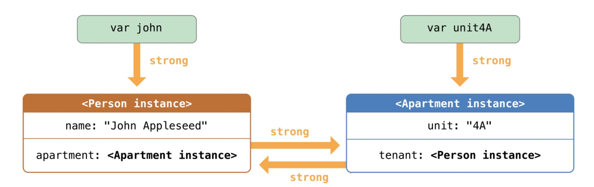
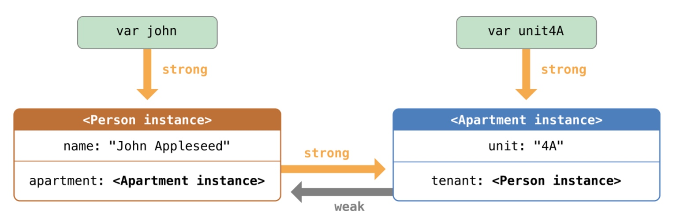
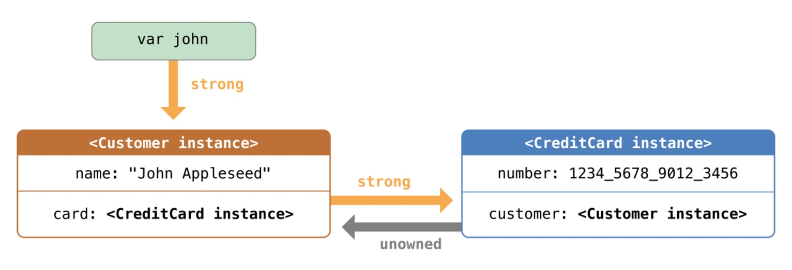
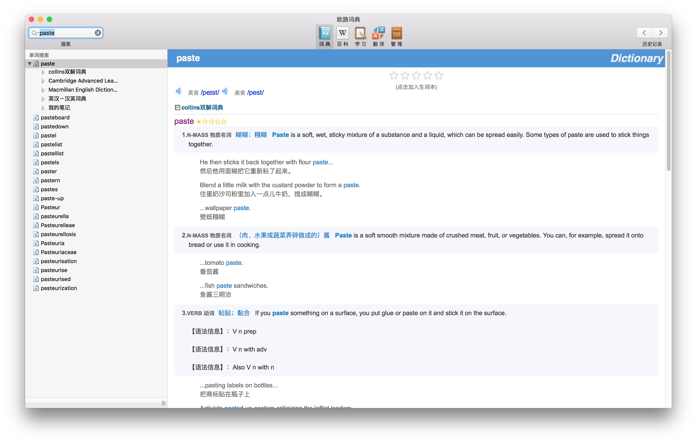
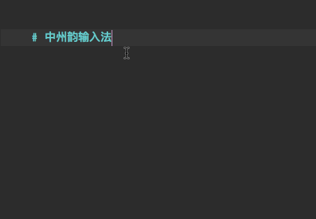

2017 Week 1 Review
今天是元旦，因为在 Calendar 中把今天归到 2017 年的第一周里了，所以就按照上面所写的把这周当做第一周吧。
这周结束了在中软的课程设计实训，以前总嫌弃小渔村破，现在回来才知道还是小渔村好啊。课程设计实训的内容是用 Java 写一个点餐系统，一个小组只需要做一份就可以了，不过几乎所有人都不知道 Git 是个什么东西，小组合作还是用的 U 盘拷贝代码，所以代码质量可想而知了，本组的其他人都比较厉害，索性我就抱大腿划水了，什么也没有参与，代码也没有写一行。
不过虽说没有写课程设计的项目，但还是有写代码的。这周把两个月前参加 HACKxFDU 的项目拿出来用 Python 3 重写了一遍。项目的地址：Neutron，当初我们考虑做 Neutron 的时候是想把它做成一个通用的智能家居语音终端的，类似于 Amazon 的 Echo，只要提供第三方的 API，就能轻松集成到 Neutron 来，但是实际上碍于 Hackathon 的时间限制，只是完成了一个简单的 Demo，完全没有拓展性。本来这个项目参加完 Hackathon 之后就没有管了，不过最近看到 Facebook CEO 扎克伯格写了一个 Jarvis，觉得和之前做的东西很像（当然还是差远了，基本我们做的东西就是用别人的 API），所以又掏出来拿 Python 3.5 重写了一遍。现在在 develop 分支基本上把框架搭建好了，最底层是和 API 交互的 layer 层，这一层需要为每个 API 写特定的代码，其上是抽象的 handler 层，提供通用的接口，抽象 layer 层的操作：例如语音控制模块、AI 模块等，这一层上还可能包裹一层特定的 wrapper，例如对特定的 message 做语义分析。通过配置文件来选择使用哪个 layer 以及配置 layer 的内容（key 等内容），开始的时候打算用 json 来做配置文件的，后来看了一下还有 yaml 这种更加简洁的配置文件，所以打算换成 yaml 的。目前这个项目还有很多内容要写的，比如特定的 layer，都需要更具不同的 API 写特定的代码，这一点上我参考的 Spacemacs 的方法。
这周在中软那边的宿舍里面把08版的《射雕英雄传》看完了，虽然槽点挺多的（特效、台词、演技），但是还是看得很欢乐，林依晨的黄蓉甚是喜欢。记得以前应该是看过朱茵版的黄蓉的，不过时间太久远了，已经记不太清了。小说倒没有读完，还是看剧比较快啊。看完后好长一段时间里面都觉得特别空虚，总感觉少了些什么。这种孤独感几乎在每次看完某部小说和电视剧后都会有（电影倒没有这种感觉，可能时间太短了），总觉得还沉浸在别人的故事里，可惜别人的故事已经结束，不得不回到现实中来。想起席慕蓉的一句话『在别人的故事里，留着自己的泪』 1 。
就借着这篇博客顺便说说 17 年的计划吧。
- 学习一门新语言：14年学了 C、Scheme，15年学了 Java、Python，16年学了 Swift，再加上各种用过但是不熟的语言，也有好多个了。现在主力开发语言是 Python，17年打算学习 一下 JavaScript，这门 GitHub 上最火的语言，不会都不好意思说自己是程序员。也不用学到多么深，只求达到入门水平。
- Python 水平达到 professional，用了接近两年的 Python，但是水平也没有长进多少，今年打算深入一下 Python，多写一些项目。
- 去周边国家玩一次，其实挺想去尼泊尔的，不知道今年有没有时间。不过即使不出国，也要多出去走走，一个人的旅行。
-
席慕蓉的《戏子》，用在这里并不完全准确。 ↩
推荐系统笔记
开始学习机器学习/数据挖掘相关的内容，打算每学习一部分知识就写一篇博客总结一下，当做学习过程中的笔记，也为以后看的时候提供存档。
这一篇笔记是关于推荐系统的，主要讲了两种推荐算法（基于用户和基于物品的协同过滤）。
基于用户的协同过滤
协同过滤（Collaborative filtering）
一个协作型过滤算法通常的做法是对一大群人进行搜索，并从中找出与我们品味相近的一小群人。算法会对这些人所偏爱的其他内容进行考察，并将它们组合起来构造出一个经过排名的推荐列表。
测试数据集
为了演示一些算法，我们需要从这个网站上下载一份数据集。这里因为是作为演示使用，所以只需要下载ml-latest-small.zip这一份简单的数据集就可以了。
相似度计算
在有了数据之后，我们需要有一种方法来确定人们在品味方面的相似程度。为此，我们可以将每个人与所有其他人进行对比，并计算他们的相似度评价值。
欧几里德距离评价（Euclidean Distance Score）
欧几里德距离是指多维空间中两点间的距离，这是一种用直尺测量出来的距离。如果我们将两个点分别记作\((p_1, p_2, p_3, p_4, ...)\)和\((q_1, q_2, q_3, q_4, ...)\)，则欧几里德距离的计算公式为：
\[
\sqrt{((p_1-q_1)^2+(p_2-q_2)^2+...+(p_n-q_n)^2)} = \sqrt{(\sum_{i=1}^n(p_i-q_i)^2)}
\]
创建 recommendations.py。
用代码表示：
from math import sqrt
# 返回一个有关 person1 与 person2 的基于距离的相似度评价
def sim_distance(prefs, person1, person2):
# 得到 shared_items 的列表
shared_items = {}
for item in prefs[person1]:
if item in prefs[person2]:
shared_items[item] = 1
# 如果两者没有共同之处，则返回 0
if len(shared_items) == 0:
return 0
# 计算所有差值的平方和
sum_of_squares = sum([pow(prefs[person1][item]-prefs[person2][item], 2)for item in prefs[person1] if item in prefs[person2]])
return 1 / (1 + sqrt(sum_of_squares))
欧几里德距离计算公式可以计算出距离值，偏好越相似的人，其距离就越短。不过，我们还需要一个函数，来对偏好越相近的情况给出越大的值，为此，我们可以将函数的值加 1（这样就可以避免遇到被 0 整除的错误了），并取其倒数，入上面代码最后一行所示。
好了，现在我们需要先将数据读取进来，在 recommendations.py 中添加如下代码:
def loadMovieLens(path='data'):
movies = {}
for line in open(path + '/movies.csv'):
(id, title) = line.split(',')[0:2]
movies[id] = title
prefs = {}
for line in open(path+'/ratings.csv'):
(user, movieid, rating, ts) = line.split(',')
prefs.setdefault(user, {})
prefs[user][movies[movieid]] = float(rating)
return prefs
在 ipython 交互环境中：
>>> import recommendations
>>> prefs = recommendations.loadMovieLens()
>>> # 比较 10 号用户 和 20 号用户的相似度评价
>>> recommendations.sim_distance(prefs, '10', '20')
0.23371479611805132
皮尔逊相关系数（Pearson Correlation Coefficient）
皮尔逊相关系数是一种度量两个变量间相关程度的方法，它是一个介于 1 和 -1 之间的值，其中，1 表示变量完全正相关，0 表示无关， -1 则表示完全负相关（一个变量的值越大，则另一个变量的值反而会越小）。
计算公式：
\[
r = \frac{\sum{XY}-\frac{\sum X \sum Y}{N}}{\sqrt{(\sum X^2 - \frac{(\sum X)^2}{N})(\sum Y^2 - \frac{(\sum Y)^2}{N})}}
\]
在 recommendations.py 中添加如下代码：
def sim_pearson(prefs, person1, person2):
# 得到双方都曾评价过的物品列表
shared_items = {}
for item in prefs[person1]:
if item in prefs[person2]:
shared_items[item] = 1
# 得到物品列表元素的个数
n = len(shared_items)
# 如果两者没有共同元素，则返回0
if n == 0:
return 0
# 计算 person1 和 person2 的皮尔逊相关系数
sumxy = sum([prefs[person1][item] * prefs[person2][item]
for item in shared_items])
sumx = sum([prefs[person1][item] for item in shared_items])
sumy = sum([prefs[person2][item] for item in shared_items])
sumx2 = sum([prefs[person1][item] ** 2 for item in shared_items])
sumy2 = sum([prefs[person2][item] ** 2 for item in shared_items])
zahler = sumxy - (sumx * sumy) / n
nenner = sqrt((sumx2 - (sumx ** 2) / n) * (sumy2 - (sumy ** 2) / n))
if nenner == 0:
return 0
r = zahler / nenner
return r
在 ipython 交互环境中：
>>> reload(recommendations)
>>> prefs = recommendations.loadMovieLens()
>>> recommendations.sim_pearson(prefs, '10', '20')
0.4908806936738162
可以看到和上面使用欧几里德距离评价计算出来的相似度是不一样的。
关于该使用哪一种相似性度量方法
除了这两种计算相似度的方法，实际上还有许多别的计算相似度的算法，例如Tanimoto 分值。使用哪一种方法，完全取决于具体的应用。
下面的代码中，将使用一个通用的相似性函数来计算相似度，只要它满足以下条件：拥有同样的函数签名，以一个浮点数作为返回值，其数值越大代表相似度越大。
寻找相似的用户
既然我们已经有了对两个人进行比较的函数，下面我们就可以编写，根据指定人员对每个人进行打分，并找出最接近的匹配结果了。
# 从反映偏好的字典中返回最佳匹配者
# 返回结果的个数和相似度函数均为可选参数
def topMatches(prefs, person, n=5, similarity=sim_pearson):
scores = [(similarity(prefs, person, other), other) for other in prefs if other != person]
# 对列表进行排序，评价值最高者排在最前面
scores.sort(reverse=True)
return scores[:n]
在 ipython 交互环境中测试：
>>> reload(recommendations)
>>> prefs = recommendations.loadMovieLens()
>>> # 与 40 号用户相似的 10 个用户
>>> recommendations.topMatches(prefs, '40', n=10)
[(1.0, '63'),
(1.0, '582'),
(1.0, '326'),
(1.0, '260'),
(1.0, '220'),
(1.0, '198'),
(1.0, '153'),
(1.0, '116'),
(0.9999999999999947, '474'),
(0.9999999999999947, '215')]
推荐物品
有的时候我们可能不需要寻找相似的用户，例如在购物网站中，我们需要的是一份可能会想要购买的物品列表，一种方法是从相似的用户所购买的物品列表中选出没有购买的，但是这种方法不确定的因素太多，例如可能相似用户还未购买某些物品，而这些物品恰恰就是我们所需要的。
为了解决上面的问题，我们需要通过一个经过加权的评价值来为影片打分，评论者的评分结果因此而形成了先后的排名。为此，我们需要取得所有其他评论者的评价结果，借此得到相似度之后，再乘以他们为每部影片所给的评价值。
以以下数据集为例：
{'Lisa Rose': {'Lady in the Water': 2.5,
'Snakes on a Plane': 3.5,
'Just My Luck': 3.0,
'Superman Returns': 3.5,
'You, Me and Dupree': 2.5,
'The Night Listener': 3.0},
'Gene Seymour': {'Lady in the Water': 3.0,
'Snakes on a Plane': 3.5,
'Just My Luck': 1.5,
'Superman Returns': 5.0,
'The Night Listener': 3.0,
'You, Me and Dupree': 3.5},
'Michael Phillips': {'Lady in the Water': 2.5,
'Snakes on a Plane': 3.0,
'Superman Returns': 3.5,
'The Night Listener': 4.0},
'Claudia Puig': {'Snakes on a Plane': 3.5,
'Just My Luck': 3.0,
'The Night Listener': 4.5,
'Superman Returns': 4.0,
'You, Me and Dupree': 2.5},
'Mick LaSalle': {'Lady in the Water': 3.0,
'Snakes on a Plane': 4.0,
'Just My Luck': 2.0,
'Superman Returns': 3.0,
'The Night Listener': 3.0,
'You, Me and Dupree': 2.0},
'Jack Matthews': {'Lady in the Water': 3.0,
'Snakes on a Plane': 4.0,
'The Night Listener': 3.0,
'Superman Returns': 5.0,
'You, Me and Dupree': 3.5},
'Toby': {'Snakes on a Plane': 4.5,
'You, Me and Dupree': 1.0,
'Superman Returns': 4.0}}
假设我们需要给 Toby 提供影片推荐，我们可以根据上面的算法得出一张表：
| 评论者 | 相似度 | Night | S.xNight | Lady | S.xLady | Luck | S.xLuck |
|---|---|---|---|---|---|---|---|
| Rose | 0.99 | 3.0 | 2.97 | 2.5 | 2.48 | 3.0 | 2.97 |
| Seymour | 0.38 | 3.0 | 1.14 | 3.0 | 1.14 | 1.5 | 0.57 |
| Puig | 0.89 | 4.5 | 4.02 | 3.0 | 2.68 | ||
| LaSalle | 0.92 | 3.0 | 2.77 | 3.0 | 2.77 | ||
| Matthews | 0.66 | 3.0 | 1.99 | 3.0 | 1.99 | ||
| 总计 | 12.89 | 8.38 | 8.07 | ||||
| Sim.Sum | 3.84 | 2.95 | 3.18 | ||||
| 总计/Sim.Sum | 3.35 | 2.83 | 2.53 |
表中列出来每位评论者的相关度评价值，以及他们对三部影片的评分情况。以 S.x 打头的列给出了乘以评价值之后的相似度。如此一来，相比于与我们不相近的人，那些与我们相近的人将会对整体评价拥有更多的贡献。总计所有加权评价值的和。
我们也可以选择利用总计值来计算排名，但是这其中有一个问题，一部受更多人评论的影片会对结果产生很大影响。为了修正这一问题，我们需要除以表总名为 Sim.Sum 的那一行，它代表了所有对这部电影有过评论的评论者的相似度之和。对于影片《Lady in the Water》来说，Puig 并未做过评论，所以我们将这部影片的总计值除以所有其他人的相似度之和。
在 recommendations.py 中添加如下代码：
# 利用所有其他人评价值得加权平均，为某人提供建议
def getRecommendations(prefs, person, similarity=sim_pearson):
totals = {}
simSums = {}
for other in prefs:
# 不要和自己做比较
if other == person:
continue
sim = similarity(prefs, person, other)
# 忽略评价值为零或者小于零的情况
if sim <= 0:
continue
for item in prefs[other]:
# 只对自己还未看过的影片进行评价
if item not in prefs[person] or prefs[person][item] == 0:
# 相似度*评价值
totals.setdefault(item, 0)
totals[item] += prefs[other][item] * sim
# 相似度之和
simSums.setdefault(item, 0)
simSums[item] += sim
# 建立一个归一化的列表
rankings = [(total / simSums[item], item) for item, total in totals.items()]
# 返回经过排序的列表
rankings.sort(reverse=True)
return rankings
在 ipython 中测试一下：
>>> relaod(recommendations)
>>> prefs = recommendations.loadMovieLens()
>>> recommendations.getRecommendations(prefs, '10')[:20]
[(5.000000000000001,
'The Slipper and the Rose: The Story of Cinderella (1976)'),
(5.000000000000001, 'Hands on a Hard Body (1996)'),
(5.000000000000001, 'For the Birds (2000)'),
(5.000000000000001, 'Diva (1981)'),
(5.0, 'Zorba the Greek (Alexis Zorbas) (1964)'),
(5.0, 'Zerophilia (2005)'),
(5.0, 'Zelary (2003)'),
(5.0, 'Z Channel: A Magnificent Obsession (2004)'),
(5.0, 'Yossi (Ha-Sippur Shel Yossi) (2012)'),
(5.0, 'World of Tomorrow (2015)'),
(5.0, 'Woody Allen: A Documentary (2012)'),
(5.0, 'Woman on Top (2000)'),
(5.0, 'Without a Clue (1988)'),
(5.0, 'Withnail & I (1987)'),
(5.0, 'Wild Zero (2000)'),
(5.0, 'War Room (2015)'),
(5.0, 'Walker (1987)'),
(5.0, 'Voices from the List (2004)'),
(5.0, 'Videodrome (1983)'),
(5.0, 'Victoria (2015)')]
匹配商品
现在我们已经可以为指定人员寻找品味相近的用户，以及如何向其推荐商品。假如我们想要了解哪些物品是相近的，那又该如何呢？
在我们浏览 Amazon 的时候，经常会看到页面底部会推荐与当前浏览的物品相似的商品。这种情况，我们可以通过查看哪些人喜欢某一特定物品，以及这些人喜欢哪些其他物品来决定相似度。事实上，这和我们之前用来计算人与人之间的相似度是一样的，只需要把人和物品相互调换就行了。
我们来编写这个翻转字典的函数：
def transformPrefs(prefs):
result = {}
for person in prefs:
for item in prefs[person]:
result.setdefault[item, {}]
# 将物品和人对调
result[item][person] = prefs[person][item]
return result
有了这个方法之后，我们就可以复用之前所写的方法了。
在 ipython 环境中测试：
>>> load(recommendations)
>>> movies = recommendations.transformPrefs()
>>> recommendations.topMatches(movies, 'For the Birds (2000)')
[(1.000000000000016, '"Silence of the Lambs'),
(1.0, 'World War Z (2013)'),
(1.0, 'Wallace & Gromit in The Curse of the Were-Rabbit (2005)'),
(1.0, 'Tron: Legacy (2010)'),
(1.0, 'Transcendence (2014)')]
我们还可以为影片推荐评论者：
>>> recommendations.getRecommendations(movies, 'For the Birds (2000)')[:20]
[(5.0, '668'),
(5.0, '618'),
(5.0, '543'),
(5.0, '541'),
(5.0, '536'),
(5.0, '52'),
(5.0, '464'),
(5.0, '46'),
(5.0, '409'),
(5.0, '357'),
(5.0, '308'),
(5.0, '296'),
(5.0, '29'),
(5.0, '28'),
(5.0, '197'),
(5.0, '196'),
(5.0, '190'),
(5.0, '131'),
(5.0, '113'),
(4.999999999999999, '465')]
基于物品的协同过滤
当前所完成的推荐系统，要求我们使用每一位用户的全部评分来构建数据集，这种方法对于小规模的数据集是没有问题的，但是对于像 Amazon 这样有着上百万用户和商品的大型网站而言，讲一个用户同其他所有用户进行比较，然后再对每位用户评过分的商品进行比较，时间花费上是巨大的。
目前为止我们所使用的技术被称为基于用户的协同过滤（user-based collaborative filtering）。除此以外，还有一种可供选择的方法被称为基于物品的协同过滤（item-based collaborative filtering）。在拥有大量数据集的情况下，基于物品的协同过滤能够得出更好的结论，而且它允许我们将大量的计算任务预先执行，从而使需要给予推荐的用户能够更快地得到他们所要的结果。
基于物品的协同过滤总体思路就是为每件物品预先计算好最为相近的其他物品。然后，当我们想为某位用户提供推荐的时候，就可以查看他曾经评过分的物品，并从中选出排名靠前者，再构造一个加权列表，其中包含了与这些选中物品最相近的其他物品。此处最显著的区别在于，尽管第一步要求我们检查所有的数据，但是物品间的比较不会像用户间比较那么频繁变化。
构造物品比较数据集
为了对物品进行比较，我们要做的第一件事就是编写一个函数，构造一个包含相近物品的完整数据集。构建完数据集之后，我们就可以在需要的时候重复使用它。
将下面代码添加到 recommendations.py 中：
def calculateSimilarItems(prefs, n=10):
# 建立字典，以给出与这些物品最为相近的其他物品
result = {}
# 以物品为中心最偏好矩阵进行倒置处理
itemPrefs = transformPrefs(prefs)
c = 0
for item in itemPrefs:
# 针对大数据集更新状态变量
c += 1
if c % 100 == 0:
print "%d / %d" % (c, len(itemPrefs))
scores = tomMatchs(itemPrefs, item, n=n, similarity=sim_pearson)
result[item] = scores
return result
该函数首先利用了此前定义过得 transformPrefs 函数，对反映评价的字典进行倒置处理，从而得到一个有关物品及其用户评价情况的列表，然后程序又循环遍历每项物品，并将转换了的字典传入 tomMatches 函数中，求得最为相近的物品及其相似度评价值，最后，它建立并返回了一个包含物品及其最相近物品列表的字典。
在 ipython 交互环境中测试：
>>> reload(recommendations)
>>> itemsim = recommendations.calculateSimilarItems(prefs)
100 / 8963
200 / 8963
300 / 8963
400 / 8963
500 / 8963
600 / 8963
700 / 8963
800 / 8963
900 / 8963
1000 / 8963
1100 / 8963
1200 / 8963
1300 / 8963
1400 / 8963
1500 / 8963
1600 / 8963
1700 / 8963
1800 / 8963
1900 / 8963
...
首次运行需要等待一段时间进行计算。
只有频繁执行该函数，才能令物品的相似度不至于过期。通常我们需要在用户基数和评分数量不是很大的时候执行这一函数，但是随着用户数量的不断增长，物品间的相似度评价通常会变得越来越稳定。
获得推荐
现在，我们可以利用反映物品相似度的字典来给出推荐了，我们可以去到用户评价过得所有物品，并找出其相近的物品，根据相似度对其进行加权。
下表给出了利用基于物品的方法寻找推荐的过程，所用到的数据可以在上面推荐物品一节中找到。
为 Toby 提供基于物品的推荐：
| 影片 | 评分 | Night | R.xNight | Lady | R.xLady | Luck | R.xLuck |
|---|---|---|---|---|---|---|---|
| Snakes | 4.5 | 0.182 | 0.818 | 0.222 | 0.999 | 0.105 | 0.474 |
| Superman | 4.0 | 0.103 | 0.412 | 0.091 | 0.363 | 0.065 | 0.258 |
| Dupree | 1.0 | 0.148 | 0.148 | 0.4 | 0.4 | 0.182 | 0.182 |
| 总计 | 0.433 | 1.378 | 0.713 | 1.762 | 0.352 | 0.914 | |
| 归一化结果 | 3.183 | 2.473 | 2.598 |
此处每一行都列出了一部我们曾经观看过的影片，以及对该片的个人评价。对于每一部我们还未曾看过的影片，相应有一列会指出它与已观看影片的相似程度。以 R.x 打头的列给出了我们队影片的评价值乘以相似度之后的结果。
总计一行给出了每部影片相似度评价值的总和以及 R.x 列的总和，为了预测我们对每一部影片的评分情况，只要将 R.x 列的总计值除以相似度一列的总计值即可。
在 recommendations.py 中添加如下代码：
def getRecommendedItems(prefs, itemMatch, user):
userRatings = prefs[user]
scores = {}
totlaSim = {}
# 循环遍历由当前用户评分的物品
for (item, rating) in userRatings.items():
# 循环遍历与当前物品相近的物品
for (similarity, item2) in itemMatch[item]:
# 如果该用户已经对当前物品做过评价，则将其忽略
if item2 in userRatings:
continue
# 评价值与相似度加权之和
scores.setdefault(item2, 0)
scores[item2] += similarity * rating
# 全部相似度之和
totalSim.setdefault(item2, 0)
totalSim[item2] += similarity
# 将每个合计值除以加权和，求出平均值
rankings = [(score / totalSim[item], item) for item, score in scores.items()]
# 按最高值到最低值的顺序，返回评分结果
rankings.sort(reverse=True)
return rankings
在 ipython 中测试一下：
>>> reload(recommendations)
>>> recommendations.getRecommendedItems(prefs, itemsim, '20')[:10]
[(5.0, 'Zoot Suit (1981)'),
(5.0, 'Zoolander (2001)'),
(5.0, 'Zack and Miri Make a Porno (2008)'),
(5.0, "You've Got Mail (1998)"),
(5.0, 'X-Men: The Last Stand (2006)'),
(5.0, 'X-Men: Apocalypse (2016)'),
(5.0, 'X-Men (2000)'),
(5.0, "Von Ryan's Express (1965)"),
(4.75, 'Willow (1988)'),
(4.75, "White Men Can't Jump (1992)")]
基于用户进行过滤还是基于物品进行过滤
在数据集大小上，基于物品进行过滤的方式要比基于用户进行过滤更快；在数据的稀疏程度上，稀疏的数据集使用基于物品的过滤方法更优，而对于秘密集的数据集而言，两者的效果几乎一样。
基于用户的过滤方法更加易于实现，而且无需额外步骤，因此它通常更适用于规模较小的变化非常频繁的数据集。在一些应用中，告诉用户还有哪些人与自己有着相近偏好是有一定价值的——也许对于一个购物网站而言，我们并不想这么做，但是对于一个音乐分享类或者电影评分类网站而言，这种潜在的需求却是存在的。
2016 Week 44 Review
- Coding - 本周主要在看《利用 Python 进行数据分析》，大概看了有一半的样子，下周应该能够结束掉。接下来的打算可能是先不看书，而是把What should I learn in data science in 100 hours?这个问题下面的回答内容实践一遍。
- Japanese - 日语已经落下好久了，大概还有1个月的时间考试，虽然只是报了一个三级试试水，但是不去考试总感觉白费报名费了，当初以为交了钱就会好好学，然而想多了。另外，日语现在并不是刚需的语言，之前决定学习是为了玩游戏，现在基本想玩的游戏都出了中文，《怪物猎人》玩了几个小时，发现不适合我这种手残。所以到底要不要继续学习日语还有待商榷……
- English - 英语自从到了大学以来就没有刻意地学过，除了准备托福的那段时间背了一些单词，然后其他都是直接用，导致了现在听说读写水平参差不齐，听力和阅读还算可以（至少能听懂和读懂技术相关的内容），口语基本就是没有说过，写作也没怎么练过，写一些基本的句子也要查语法（靠语感来写作结果就是一堆语法错……）。相比较日语来说，英语还算一个刚需的技能，尤其是写作和口语部分，还需要加强训练。接下来的一段时间内也会把英语学习提到日程上来，暂时的计划还没有想好，先加到 TODO 中。
- Reading - 发现这学期都没有读过几本书，上学期还能保持基本每周都读一本书，现在 Kindle 都吃灰了。下周先把《挪威的森林》这本书看完吧……
- Game - 等《精灵宝可梦 日月》发售，还有20天的样子，没有预定，直接买现货或者买下载版吧。
搭建 Python 科学计算环境
最近在看《Python for Data Analysis》（利用 Python 进行数据分析）这本书，贴一点笔记，这一篇是关于环境搭建的。另外吐槽一下，书中还是有不少错误的，语法错误就发现了好多处，大概读完了之后会整理出一份勘误表出来，可能是因为写书的时候是 14 年，两年过去了，pandas 库也有了一些变化。
安装虚拟环境
不想把系统的 python 库搞得乱乱的（其实已经很乱了），所以还是建一个独立虚拟环境专门来做科学计算吧。具体的方法我在virtualenv 相关笔记这篇博客中已经详细写了，建议将启动虚拟环境的命令添加到终端的配置文件中去（使用alias），这样就避免每次一打开就输入一长串命令了。
因为科学计算社区的一些库还是基于 Python 2.x 版本的，所以这里我们使用的 Python 版本为 2.7。
然后使用以下命令一键安装所需要的库：
sudo pip install numpy pandas matplotlib jupyter scikit-learn
安装不上的请检查是不是需要翻墙。
IPython
熟悉 Python 的同学应该对这个解释器不陌生，自带的 Python 解释器实在是太弱了。它与传统的“edit-compile-run”（编辑-编译-运行）方式的区别在于，它鼓励使用“execute-explore”（执行-探索），所以特别适合用在计算和数据分析领域，可以方便得使用「试错法」和「迭代法」进行开发。这里主要介绍它基于 Web 的交互式笔记本功能（命令行中大同小异）。
开启 IPython Notebook
使用以下命令来打开 IPython Notebook：
(ENV2.7)$ jupyter notebook
这样 server 就启动了，浏览器会自动打开一个目录树。
Note：记住在启动了虚拟环境的状态下使用这条命令，要不然就会使用系统的 IPython 版本来运行。
然后我们新建一个 IPython Notebook 用作演示：

In [1] 中的命令是为了能让我们直接在 IPython Notebook 中集成显示 matplotlib 画的图片，所以如果是用作科学计算的话，首先先执行以下这条命令再说。
内省
在变量的前面或后面加上一个 ? 就可以将有关该对象的一些通用信息显示出来。

基本上什么都能看。
%run 命令
使用 %run 可以运行本地的 Python 脚本，并可以在 IPython 中访问脚本中定义的所有变量。
如果想要脚本能够访问 IPython 中的命名空间，可以使用 %run -i 命令。
测试代码的执行时间
使用 %time 和 %timeit 可以用来测试代码的执行时间。

Example
下面使用一个具体的例子来演示 IPython Notebook 的使用。
使用到的数据可以在Beyond the Top 1000 Names下载到，这是一份包含1880-2015年每年出生婴儿姓名出现次数的数据表。
由于该数据按年份被分割成了好多文件，所以第一步我们需要把所有数据组装到一个 DataFrame 中去。

不知道这些 Python 代码没关系，因为这里只是用来演示 IPython Notebook。
然后我们按照性别和年度统计总出生数：

然后绘制出表格：

2016 Week 40 Review
这周恰逢国庆假期，休息了两天（感觉今天貌似也在休息），明天学校断电断网（大农村条件艰苦），所以应该要出去一天，暂时的行程还没有安排。
编程
总结
首先收到了 HACKxFDU 的通过邮件，所以 14 号会去上海打一波酱油，以目前的水平如果不抱大腿感觉完全没有拿奖的可能性。主要的目的应该不是去参赛，可能会去找找下学期实习的目标，顺便认识一些大牛(≧▽≦)/
上周说要看完《Flask Web Development》，但是实际上并没有看完，大概看了一半的样子，期间还看了一些 Flask 的源码，打算边看书边看源码，然后之后再重新造一遍轮子。
计划
之前就一直觉得自己的 Python 水平好像一直止步不前（传说中的半吊子水平），要做什么东西都是先 Google 一下用什么库，有些标准库中的内容也很不熟悉。昨天被学长问道最近在学什么，我说在看 Flask，然后就被鄙视了，然后通过对话才意识到 Library Reference 还没有完整的刷过，Python 的基础还是比较薄弱的。现在是个人就会 Python，不过刷过 Library Reference 的人应该还是不多的。
所以接下去的计划应该是：
- 继续看 Flask（被鄙视也要看啊，开了头不能半途而废……），把源码看懂然后自己山寨一个，尝试着写一些基于 Flask 的 Project；
- 刷 Python Library Reference，用 ipython notebook 来做笔记，先刷一遍，不会的东西先跳过；
- 刷一下算法，这个是为了下学期的面试准备的，CLRS 没有看完，但是感觉想要看完会花掉不少的时间，看不看到时候再说，先把 LeetCode 刷一遍，然后《编程之美》、《编程珠玑》、《剑指 offer》这几本书刷一遍。
这学期估计做完上面的事情时间就用得差不多了，下学期开始的时候就要为参加 GSoC 做一些准备了。
下周要做的事情：
- 继续刷《Flask Web Development》，争取看完
- 看完 Python Library Reference 2、3、4节
日语
总结
这周貌似完全没有学习日语！所以上周列的计划也没有完成，尴尬！时间分配上面还是有一点问题了，每天有计划今天计算机的东西要看哪些，但是日语的东西貌似一点也没有计划，想到了就看一点，所以没有想到的时候就完全不看了-_-|||
计划
现在有点后悔抱名 N3 的考试了，以来 N3 没什么卵用，而来貌似自己好像并没有太多时间学习日语，还不如好好学习一下然后直接考 N2 或者 N1，但是如果不去考试的话就浪费了 350 大洋！
五十音基本上是会了，所以还是直接看《大家的日语》这本书，一天学习一课的样子，学习到第 5 课。
游戏
最近发售的大作有点多啊，首先是 PC 上的《文明6》，然后 11 月份还有《精灵宝可梦 太阳·月亮》，其实主要是想玩日月……
Pokemon ORAS
这周好像 OR 也没有玩多久，主要就是战斗宅邸推塔，今天超级单打打到 45 层失误跪了，目前的队伍还不是很稳，还要重新组一个队伍。另一方面打了几把排位，语言的关系对有些技能不是很熟悉，所以吃了好几次亏，而且没玩过 xy 导致 gen6 的精灵基本不认识。
入了对战坑之后发现这游戏根本不是小孩子玩的，虽说是「子供向」的游戏，但是对战方面实在是太硬核了，要了解的东西太多，玩了 70h+ 几乎才了解一些皮毛。不过日月出来了之后应该会好些，不会总是看到技能就要查图鉴是干嘛的了。
2016/08/08 阅读笔记
Quora: How can I study for 10+ hours a day without getting depressed and how can I make myself get used it?
Such a stupid question.
- Don't study more than 7.5 hours a day. You can't learn when you are exhausted.
- Take a day off per week. Do something you like on that day.
- Make a plan.What knowledge is most critical in each of the subjects? First, concentrate only on that.
- Study from low to high resolution.
- Nap. A lot.
- Study one topic for 2.5 hours. Then switch to another. Continue.
- Read. Then put down the book. Then summarize what you have read. Don't look at what you were reading when you summarize.
- Avoid time specific plans unless you're a monk or living in an extremely isolated environment.
- Create a simple mechanism for notes and plans. You don't need any complex thing. The aim here is to work efficiently so these tools should be tools, not the whole story.
- Create tasks as atomic as possible. Task should not be long. Best practice is that the task can be done after 1-2 hours of efficient work. If the task is big, you divide it into subtasks. In other words, avoid context switching as much as possible.
- Get rid of all external distraction.
- Use Pomodoro Technique.
- If you have a long-run work and you can't complete it at the end of the day, take a note for tomorrow's yourself in order to remember the basic of teh task. And tomorrow, you start the day by glancing over the connected tasks.
If studying makes you depressed, it's because your mind considers it a chore that you're forced to do. Doing any such chore for long periods of time is awful and depressing. On the other hand, doing somehting you love is fun, even when it's physically or mentally exhausting. So what you need to do is make the experience more valuable and enjoyable.
- Knowing WHY you're learning something.
- Really understanding what you're learning.
- Learn and practise proven efficient and effective study tools like SQ5R and Cornell Notes.
- SQ5R reading/satudying strategy: [Survey, Question, Read, Record, Recite, Review, Reflect],
2016/07/02 阅读笔记
How I became (and stayed) a successful programmer
How do I take a new skill like programming, grow it, shape it, and tune it over time so I can achieve longevity in the industry?
1. I surround myself with programmers who are way better than me
The best way to improve (at anything) is to learn from people better than you.
I remind myself to talk less and to listen more.
2. I occasionally leave my comfort zone
Leaving comfort zone helps me think differently by challenging a bunch of established ideas I already have.
Maybe you don't want to do this constantly because it can be hard to get into a rhythm with your normal area of work. But in moderation it can really open your mind to new ways of thinking.
Find a programming task that takes you out of your comfort zone and make it your next project. Then watch it pay off in spades.
3. I value being independent
What't most inportant is how you choose to find the answers to your questions.
This means I'll try to do most things myself first, and only when I really get stuck, I'll ask for help.
Benefits:
- You learn how to be resourceful.
- You earn respect by being courteous of other people's time and work.
- You start developing your creativity.
Please don't quit -- every expert was once a beginner
Great developments never come from within your comfort zone
It's always hard to push yourself to the next level, because it requires greater effort than the usual. It requires more energy, which may tire you physically and mentally.But don't think about that. Think about the result. The achievement.
Every time you take a step toward expertise, no matter how small, it is still a step.
Learn in diffuse mode
Since it may be hard to get a concept the first time you read about it, you can do something that will make it better for you and help you get it quickly.
Read the full text with total focus (first time, even if you don't understand), okay? Now, read it again. After the second time, google the concept and try to read about it in different articles. That will help you see it from different angles, which will help you better understand it.
Next time is to read the text a third time. Your understanding of the concept is much better now than it was the first time you read it, even though in all likelihood you're still early on in your quest to truly understand that concept.
This medhod is called Diffuse mode. You can apply this type of learning toward applies to videos and tutorials, as well.
Every expert was once a beginner.
"You never fail until you stop trying." - Albert Einstein
You should know that reaching a high level takes time.
"I'm convinced that about half of what separates the successful Entrepreneurs from the non-successful ones is pure perseverance." - Steve Jobs
Some tips:
- Don't work alone.
- Don't wait for inspiration. Discipline is reliable.
- Real work usually isn't fun.
- Practice, practice, and practice.
- Tutorials fish on your behalf, so you don't need to learn how to fish yourself. You need to read books.
- Always try to understand a new concept using different resources.
- Don't just read. Build. Try, try, and keep trying.
- Frustration, boredom, tiredness, exhaustion -- these are all normal.
- Ask.
"Long-term consistency trumps short-term intensity." - Bruce Lee
2016 Week 21 阅读笔记
怎样花两年时间去面试一个人
The great software developers, indeed, the best people in every field, are quite simply never on the market.j
The average great software developer will apply for, total,maybe, four jobs in their entire career.
—— Joel Spolsky
- 最好的人也许不投简历，就决定去哪里了。所以要在他们做决定之前找到他们。
- 比较差的会投很多次简历，找不到工作的时间约多，投的简历越多，给整个 pool 带来很多噪音，top 10% 的简历也许根本不算全部人的 top 10%。
—— 邹欣
Joel Spolsky 写了一本书，专门讲了公司招聘的心得和体会，《Smart and Gets Things Done》。
现在绝大多数应届生简历而言，也许最具信息量的部分不是「精通 xxx，熟悉 yyy，掌握 zzz」，不是「在 uuu 实习过」，也不是这个项目那个作业，反倒是越来越被认为不重要的一项：毕业学校。原因是简历上的其他条目的信息量太小了。
很多时候，是否好好看完一本好书，对一个人的提升往往能达到质的区别。就算不好好看完一本书，马马虎虎看完，只要书是真的函数，也肯定会有很大提高。
好书和坏书的差别，从本质上，就是学习效率和大方向的差别。读烂书浪费时间，但读好书却节省时间。
「书单计划」的优点：
- 清晰、明确。完全可度量。
- 防伪：读没读过，随便一问便知。而正因为应聘者也知道这事不像实习经验可以忽悠，所以也不敢乱往简历上捅词。
- 不在乎是否「泄题」：书单是完全公开的，无所谓，本来就是要你去读的。
- 管你用心不用心读，只要读了，读完了，就有区别。（笔者注：根据经验，没有用心读完可能真的没有什么卵用）
- 不存在「怎么做」的障碍：所有人都知道怎么读书——一页一页读。
- 不需要招聘者投入精力：书单在此，就这么简单。
- 评估的负担很大程度上转移到了应聘者身上：是不是认真看完了，有没有心得体会。
「书单计划」的背后是另一个悲剧的现实，如果不是因为这个现实，这个计划也完全没有必要，那就是，中国 IT 大学教育当中要求学的书，和企业真正需要你读的书相比，不是完全不够用，就是写得不够好，或者更悲剧的就是根本用不上，所以在这个大背景下出来的牛人都是自己淘书自己学的。
第一份工作的月薪 = 大学四年买过的技术书籍价格的总和
—— 熊力
GitHub
有经验的面试者只要稍稍扫两眼一个人的 GitHub 历史，跳出几个 check-in 历史看一看，便完全能够迅速判断这个人是否满足他的要求。不再需要费劲心机地去想题目，去观察，去揣测，去花费大量的时间的同时还只能采样到几个极为有限的点。
书单 + GitHub，就相当于一个两年左右的面试。
没有哪个行业像 IT 行业这样特殊：没有什么东西不能够（应该）在互联网上学到的。
一些书单
- 《编码的奥秘》
- 《深入理解计算机系统》
- 《Windows 核心编程》
- 《程序员的自我修养》
- 《代码大全》
- 《程序员修炼之道》
- 《编程珠玑》
- 《编程之美》
- 《The C Programming Language》
- 《The C++ Programming Language》
- 《Programming: Principles and Practice Using C++》
- 《Accelerated C++》
- 《计算机程序的构造和解释》
- 《Clean Code》
- 《Implementation Patterns》
- 《Design Patterns》
- 《Agile Software Development, Principles, Patterns, and Practices》
- 《Refactoring》
- 《C++ 编程思想》
- 《Effective C++》
- 《深度探索 C++ 对象模型》
- 《C++ 语言的设计和演化》
- 《C 专家编程》
- 《C 陷阱与缺陷》
- 《C 语言接口与实现》
- 《Lua 程序设计》
- 《Linkers and Loaders》
- 《COM 本质论》
- 《深入理解 Windows 操作系统》
- 《Unix 编程艺术》
- 《代码优化：有效使用内存》
- 《深入理解 Linux 内核》
- 《TCP/IP 详解》
- 《软件随想录》
- 《黑客与画家》
- 《编程人生》
- 《人月神话》
- 《算法导论》
- 《快速软件开发——有效控制与完成进度计划》
- 《IT 项目管理那些事》
- 《最后期限》
- 《走出软件作坊》
- 《你的灯亮着吗》
- 《Algorithms》(by Sanjoy Dasgupta, Christos Papadimitriou and Umesh Vazirani)
- 《Data Structures and Algorithms》
- 《The Design of the UNIX Operating System》
- 《Compilers》(龙书)
- 《Computer Architecture: A Quantitative Approach》
- 《Flow》
- 《Outliers》（Why hard work and luck are both important）
一直以来伴随我的一些学习习惯（三）：阅读方法
- 乘着对一件事有热情的时候，一股脑把万事那个最难的阶段熬过去。
- 根据主题来查阅资料，而不是根据资料来查阅主题。按照主题来阅读，你会发现读的时候不再是老老实实地一本书看完再看另一本，而是非常频繁地从一本书跳到另一本书，从一处资料跳到另一处资料，从而来获得多个不同的人对同一个主题是如何讲解的。因为即便是经典的书，你也不能指望它对其中每一个主题的介绍都是尽善尽美的，有些书对某个主题（知识点）的介绍比较到位，有些书则对另一些知识点介绍得比较到位。而有时候一篇紧凑的 paper 比一本书上讲得还要好。我硬盘里面的书按照主题分类，每个主题下面都有一堆书，当我需要学习某个主题的知识时，我会把里面涉及这个主题的书都翻开来，索引到相关章节，然后挑讲得好的看。
- 好资料，坏资料。好资料的特点：从问题出发；重点介绍方法背后的理念，注重直观解释，而不是方法的技术细节；按照方法被发明的时间流程来介绍（先是遇到什么问题，然后怎样分析，推理，最后发现目前所使用的方法）。坏资料的特点是好资料的反面：上来就讲方法细节，仿佛某方法是从天上掉下来的。根本不讲为什么要用这个方法，人们最初是因为面对什么问题才想到这个方法的，其间又是怎样才想出这个方法的，方法背后的直观思想又是什么。
- 学习一个东西之前，首先在大脑中积累充分的「疑惑感」。即弄清面临的问题到底是什么，在浏览方法本身之前，最好先使劲问问自己能想到什么方法。一个公认的事实是，你对问题的疑惑越大，在之前做的自己的思考越多，当看到借到之后的印象就越深刻。
- 有选择地阅读。这里的选择体现在两个地方，一是选择一本书中感兴趣的章节优先阅读，二是对一本书中技术性较弱或信息密度较低的部分快速地略读。一般来说，除了技术性非常强的书之外，大多数书的信息密度很低，有很多废话。一般来说在阅读的时候应该这样来切分内容：1. 问题是什么？2. 方案是什么？3. 例子是什么？如果是需要解释一个现象的，那么1. 现象是什么？2. 解释是什么？3. 之城这个解释的理由是什么？ 4. 例子是什么。
- 为什么看不懂？1. 你看得不够使劲。对于这类情况，仔仔细细地再多读两遍，多试着去理解两遍，往往会恍然大悟。2. 其中涉及到了你不懂得概念，这是技术性的不理解，这种情况就需要 Cross Reference。如果一句话中用到了你不懂得概念，那就去查。奇怪的是很多人看不懂也不分析一下为什么不懂，就直接放弃了。正如解决问题一样，问题卡住解决不了了，第一时间要做的就是分析为什么解决不了，而不是直接求救。3. 作者讲述的顺序不对，你接着往下看，也许看到后面就明白前面的了。
- 如何搜寻到好书。1. 同作者的著作。2. Amazon 相关推荐和主题相关的书列。3. 一本好的著作（或一份好的资料——不管是书还是网页）在参考资料里面重点提到的其他著作。4. 有时对于一个主题，可以搜索到好心人总结的参考资源导引，那是最好不过的。
What every computer science major should know
- What should every student know to get a good job?
- Waht should every student know to maintain lifelong employment?
- What should every student know to enter graduate school?
- What should every student know to benefit society?
Portfolio versus resume
Every computer science major should build a portfolio.
A portfolio could be as simple as a personal blog, with a post for each project or accomplishment. A better portfolio would include per-project pages, and publicly browsable code (hosted perhaps on github or Google code).
Contributions to open source shold be linked and documented.
A code portflolio allows employers to direcctly judge ablility. GPAs and resumes do not.
Technical communication
I would recommend that students master a presentation tool like PowerPoint or (my favorite) Keynote.
For producing beautiful mathematival documentation, \(LaTex\) has not equal. All written assignments in techical courses should be submitted in LaTex.
An engineering core
The Unix philosophy
The Unix philosophy is one that emphassizes linguistic abstraction and composition in order to effect computation.
Systems administration
Programming Language
Discrete mathematics
Data structures and algorithms
Theory
Architecture
Operating System
Networking
Security


2016 Week 19 阅读笔记
准备好迎接 3.0 API 变化
在即将发布的 Swift 3 将在 Cocoa 和 CocoaTouch 上做出重大改变。
某些 API 的名字变得更加简洁了。
PROGRAMMING BY POKING: WHY MIT STOPPED TEACHING SICP
关于为什么 MIT 停止了赫赫有名的 6.001，Gerry Sussman 的回答：
- 教了太多年，不想教了。
- 这门课放到今天已经没有那么重要了。在 80 年代和 90 年代，工程师们通过把简单和易于理解的部分组成复杂的系统，SICP 就是为了提供这种抽象的语言而存在的。
He said that programming today is “More like science. You grab this piece of library and you poke at it. You write programs that poke it and see what it does. And you say, ‘Can I tweak it to do the thing I want?'”. The “analysis-by-synthesis” view of SICP — where you build a larger system out of smaller, simple parts — became irrelevant. Nowadays, we do programming by poking.
为什么现在改用 Python 了？
Python has a ton of libraries that make it applicable to many types of projects that instructors might want to assign (like writing software to control a robot.)
Python 库多 -_-|||
另外，Sussman 还说道 SICP 确实比现在使用 Python 教学更加 coherent。
什么是 Git
Git 采用分散式架构，是分散式版本管理 DVCS（Distributed Version Control System）的代表。
性能
不同于某些版本管理软件，Git 在决定代码修改历史以及保存形式的时候不会被文件名的变化所愚弄，Git 关注的文件内容本身。在实际的操作中，Git 使用一种混合了差分编码（delta encoding，仅保存代码修改的差分），压缩，直接保存，以及版本元数据（version metadata objects）的管理方式。
安全性
Git 将保持所管理代码的整合性作为首要要务。所有的文件内容，文件相互关系，以及文件目录结构，版本，标签以及修改，都经过加密哈希校验算法（SHA1）的保护。这可以防止各种意外的代码修改食物，或者是第三者的恶意修改，使得代码修改历史完全有迹可循。

Swift 中的内存管理
这篇文章是在阅读《The Swift Programming Language》Automatic Reference Counting（ARC，自动引用计数）一章时做的一些笔记，同时参考了其他的一些资料。
在早期的 iOS 开发中，内存管理是由开发者手动来完成的。因为传统的垃圾回收机制对于移动平台来说十分低效，苹果采用的是引用计数（RC，Reference Counting）的方式来管理内存，开发者需要通过手工的方式增加或减少一个实例的引用计数。在 iOS 5 之后，引入了 ARC 自动引用计数，使得开发者不需要手动地调用 retain 和 release 来管理引用计数，但是实际上这些方法还是会被调用，只不过是交给了编译器来完成，编译器会在合适的地方帮我们加入这些方法。
什么是自动引用计数？
每当你创建一个类的实例的时候，ARC 便会自动分配一块内存空间来存放这个实例的信息，当这个实例不再被使用的时候，ARC 便释放实例所占用的内存。一般每个被管理的实例都会与一个引用计数器相连，这个计数器保存着当前实例被引用的次数，一旦创建一个新的引用指向这个实例，引用计数器便加 1，每当指向该实例的引用失效，引用计数器便减 1，当某个实例的引用计数器变成 0 的时候，这个实例就会被立即销毁。
在 Swift 中，对引用描述的关键字有三个：strong，weak 和 unowned，所有的引用没有特殊说明都是 strong 强引用类型。在 ARC 中，只有指向一个实例的所有 strong 强引用都断开了，这个实例才会被销毁。
举一个简单的例子：
class A {
let name: String
init(name: String) {
self.name = name
}
deinit {
print("A deinit")
}
}
var a1: A?
var a2: A?
a1 = A(name: "A")
a2 = a1
a1 = nil
上面这个例子中，虽然 a1 这个 strong 强引用断开了，但是还有 a2 这个强引用指向这个实例，所以不会在命令行中输出 A deinit，当我们把 a2 也设置为 nil 时，与这个实例关联的所有强引用均断开了，这个实例便会被销毁，在命令行中打印 A deinit。
循环强引用（Strong Reference Cycles）
但是，在某些情况下，一个类实例的强引用数永远不能变为 0，例如两个类实例互相持有对方的强引用，因而每个类实例都让对方一直存在，这就是所谓的强引用循环（Strong Reference Cycles）。
这里引用 TSPL 中的例子：
class Person {
let name: String
init(name: String) { self.name = name }
var apartment: Apartment?
deinit { print("\(name) is being deinitialized") }
}
class Apartment {
let unit: String
init(unit: String) { self.unit = unit }
var tenant: Person?
deinit { print("Apartment \(unit) is being deinitialized") }
}
每一个 Person 实例有一个可选的初始化为 nil 的 Apartment 类型，因为一个人并不总是拥有公寓。同样，每一个 Apartment 实例都有一个可选的初始化为 nil 的 Person 类型，因为一个公寓并不总是属于一个人。
接下来的代码片段定义了两个可选类型的变量 john 和 unit4A，并分别设定为下面的 Person 和 Apartment 的实例，这两个变量都备受设定为 nil：
var john: Person?
var unit4A: Apartment?
现在可以创建特定的 Person 和 Apartment 实例，并将它们赋值给 john 和 unit4A 变量：
john = Person(name: "John Appleseed")
unit4A = Apartment(unit: "4A")
下面一段代码将这两个实例关联起来：
john!.apartment = unit4A
unit4A!.tenant = john
将两个实例关联在一起后，强引用的关系如图所示：

这两个实例关联之后，会产生一个循环强引用，当断开 john 和 unit4A 所持有的强引用时，引用计数器并不会归零，所以这两块空间也得不到释放，这就导致了内存泄漏。
可以将其中一个类中的变量设定为 weak 弱引用来打破这种强引用循环：
class Apartment {
let unit: String
init(unit: String) { self.unit = unit }
weak var tenant: Person?
deinit { print("Apartment \(unit) is being deinitialized") }
}

当断开 john 和 unit4A 所持有的强引用时，Person instance 的引用计数器变成 0，实例被销毁，从而 Apartment instance 的引用计数器也变为 0，实例被销毁。
什么时候使用 weak？
当两个实例是 optional 关联在一起时，确保其中的一个使用 weak 弱引用，就像上面所说的那个例子一样。
unowned 无主引用
在某些情况下，声明的变量总是有值得时候，我们需要使用 unowned 无主引用。
同样借用一下 TSPL 中的例子：
class Customer {
let name: String
var card: CreditCard?
init(name: String) {
self.name = name
}
deinit { print("\(name) is being deinitialized") }
}
class CreditCard {
let number: UInt64
unowned let customer: Customer
init(number: UInt64, customer: Customer) {
self.number = number
self.customer = customer
}
deinit { print("Card #\(number) is being deinitialized") }
}
这里定义了两个类，Customer 和 CreditCard，模拟了银行客户和客户的信用卡，在这个例子中，每一个类都是将另一个类的实例作为自身的属性，所以会产生循环强引用。
和之前那个例子不同的是，CreditCard 类中有一个非可选类型的 customer 属性，因为，一个客户可能有或者没有一张信用卡，但是一张信用卡总是关联着一个用户。
var john: Customer?
john = Customer(name: "John Appleseed")
john!.card = CreditCard(number: 1234_5678_9012_3456, customer: john!)
关联两个实例后，它们的引用关系如图所示：

当断开 john 变量持有的强引用时，再也没有指向 Customer 的强引用了，所以该实例被销毁了，其后，再也没有指向 CreditCard 的强引用了，该实例也被销毁了。
什么时候使用 unowned 无主引用？
两个实例 A 和 B，如果实例 A 必须在实例 B 存在的前提下才能存在，那么实例 A 必须用 unowned 无主引用指向实例 B。也就是说，有强制依赖性的那个实例必须对另一个实例持有无主引用。
例如上面那个例子所说，银行客户可能没有信用卡，但是每张信用卡总是绑定着一个银行客户，所以信用卡这个类就需要用 unowned 无主引用。
无主引用以及隐市解析可选属性
还有一种情况，两个属性都必须有值，并且初始化完成之后永远不会为 nil。在这种情况下，需要一个类使用 unowned 无主引用，另一个类使用隐式解析可选属性。
闭包引起的循环强引用
在 Swift 中，闭包和函数都属于引用类型。并且闭包还有一个特性：可以在其定义的上下文中捕获常量或者变量。所以，在一个类中，闭包被赋值给了一个属性，而这个闭包又使用了这个类的实例的时候，就会引起循环强引用。
Swift 提供了一种方法来解决这个问题：闭包捕获列表（closure capture list）。在定义闭包的同时定义捕获列表作为闭包的一部分，捕获列表定义了闭包体内捕获一个或者多个引用类型的规则。跟解决两个类实例之间的循环强引用一样，声明每个捕获的引用为弱引用或者无主引用。
捕获列表中的每一项都由一对元素组成，一个元素是 weak 或者 unowned 关键字，另一个元素是类实例的引用（例如最常见得是 self），这些在方括号内用逗号隔开。
具体的使用方法请参考官方文档。
何时使用 weak，何时使用 unowned
在闭包和捕获的实例总是相互引用并且总是同时销毁的时候，将闭包内的捕获定义为 unowned 无主引用。
在被捕获的实例可能变成 nil 的情况下，使用 weak 弱引用。如果被捕获的引用绝对不会变成 nil，应该使用 unowned 无主引用，而不是 weak 弱引用。
Garbage Collection（GC，垃圾回收）
其实 ARC 应该也算 GC 的一种，不过我们一谈到 GC，大多都会想到 Java 中的垃圾回收机制，相比较 GC，ARC 简单得许多。以后有机会可以讨论一下 Java 中的内存管理。
另外，需要注意的一点是，这里所讲的都是针对于引用类型，结构体和枚举在 Swift 中属于值类型，不在 ARC 的考虑范围之内。
更有效率的程序员（一）：时间记录
两年前，曾经写过一篇有关时间管理的文章，那个时候还在上高二，对于时间管理仅仅是有一点肤浅的了解，自然写出来的文字也是比较幼稚的。经过两年的实践，积累了很多时间管理的经验，想要拿出来分享一下。预计会写一个系列，包括使用的工具和日常的 Workflow。
日常使用的工具有这些：
- 纸质笔记本（Moleskine）
- OmniFocus
- Evernote
- Toggl
这篇文章从题目也可以看出来，主要讲一些关于时间记录的内容，对应的工具是 Toggl。关于 Toggl，我已经在知乎的一个回答里面推荐过了，这里会更加详细地介绍一下使用流程，在谈论术之前，先来说说道的问题，为什么要做时间记录。
其实我们对时间是很不敏感的，相信你一定有过这样的体验：早晨醒来，干劲满满，准备打开电脑把昨天没有写完的代码解决，这时想到邮件还没看，先查一下邮件吧，反正花不了多少时间，在查看邮件的时候又发现知乎上有人给你发私信了，在到知乎上看一下私信，顺便回复一下，既然上了知乎，那么去首页看看订阅的内容里面有没有什么有意思的东西吧，看到一个有意思的回答，是推荐你买买买的，于是乎又打开淘宝看了看商品的具体情况，顺便加到购物车里，这是候发现已经中午了，算了，先去吃饭吧，代码等等吃完饭再写，吃过午饭后又觉得有一点困意，那就睡一会儿吧，一觉醒来，发现已经四点多了，不行了，赶紧写代码，等等，这个 bug 好像找不到问题所在啊，算了，去 Stack Overflow 上找找吧，在 Stack Overflow 上找到了答案，链接到一篇具体的解释文章，点进去看了看，发现太长了，还是先加到 Pocket 中，以后再看吧，这个人的博客似乎写得不错，浏览一下 Archive 页面看看还有没有其他的好文章，从头到尾浏览了一遍，心中不禁惊叹，写得真好！然后想到今天 Reddit 好像还没看，说不定又有什么好东西，于是又上 /r/programming 刷了一会儿，看到了几篇牛逼的文章，时间也不早了，该吃晚饭了，吃完晚饭自然又不想写代码，休息一会儿，逛一下 Bilibili 吧，看了几个视频之后突然想到今天的代码还没有写，于是又接着关掉网页去写代码，搞到深夜，终于把代码写完了，朋友圈发一条状态「奋战到深夜，终于把代码改完了！」。
多么充实的一天，你这样想到，今天似乎做了很多事情。但是实际上呢？有效的时间几乎只有两三个小时。所以你需要把做什么事用了多长时间记录下来，然后就会发现这「充实」的一天过得是多么可怕了。
根据这些时间的时间记录的经验来看，至少有以下三点好处：
- 提高对时间的感知能力，发现和避免时间黑洞。记录下时间的时候，你会刻意地关注目前手上正在做的事，如果是一些浪费时间的事，会使你减少花在上面的时间。
- 更好地制定计划。有段时间给自己制定的计划老是不能够完成，目标定得太高，再怎么跳也抓不到，通过记录一些事情所花费的时间，就可以更好地做计划，比如说看完一本书需要用多少时间。
- 激励自己。积累了一段时间的数据之后，就可以看到在某一方面投入了多少时间了，根据 10000 小时定律，可以知道自己与专家级别的能力还相差多少。
当然，凡事有利就必有弊。
- 时间记录本身也会花费时间（可以通过工具来弥补）。
- 最开始的时候总是会忘记记录。
- 事无巨细地记录时间，增加压力（这一点会在下面详细说明）。
简单地讲了一下「道」层面的问题，想要继续深入的可以看一下《奇特的一生》这本书。下面说一说「术」的层面。
简单的系统
其实最开始的时候一支笔、一本本子、一块手表就够了，这一阶段主要是养成时间记录的习惯，当然使用 Evernote 或者 OneNote 之类的软件也是可以的。可以按照以下的模板来记录：
2016/04/10
7:00 - 8:30 阅读 xxx xx 页（1h30min）
9:00 - 9:45 完成 xxx 项目 xx 功能的开发（45min）
...总结：
编程时间：xx h xx min
阅读时间：xx h xx min
有效时间合计：xx h xx min
娱乐时间：xx h xx min
...
具体的分类可以根据自己的需求来进行。如果对时间记录没有接触过的同学可以选择这个方法试着用一段时间，看有没有什么改变。
Toggl
前面说了这么多，中与引来了今天的主角：Toggl。什么是 Toggl，简单得来说，是一款时间记录的工具，试用过市面上几乎所有时间记录的工具，发现 Toggl 是最符合《奇特的一生》中的工作流的。
安装
Toggl 几乎包含了全部平台，其中最强大的属于 Web 版，各种高级的报表功能需要在 Web 版上面才能试使用。
并且它还提供了 API，可以自由定制。
基本使用
下面主要介绍 Web 版的内容。注册完登陆进计时页面就是如下图所示：

- 你当前正在记录的内容（如果不确定，可以先不填，这个是比其他软件优秀的原因之一，有时候只是想先记录下时间，之后再进行区分）；
- 当前记录内容所属分类，可以添加 Tag，后面的美元符号可以添加这个任务的花费，基本没有用到过这个功能；
- 记录的时间，可以手动添加时间；
- Timeline，每天做了什么事情用了多少时间就记录在这里（周六周日没有怎么使用，所以比较空）；
- 一周记录时间汇总。
知道了以上的内容之后就可以开始记录了，比如说就把学习 Toggl 的使用当成第一个记录的内容。
更好的分类
详细的分类可以更好地输出报表。我使用的是三级的分类：大类-具体领域分类-task。Toggl 默认只可以使用两个层级的分类，Project - Task，但是可以把 Client 这个用作最大的分类，这样就可以进行三个层级的分类，下面是我的分类内容；
- 基本工作（Client）
- 计算机（Project）
- 英语
- 健身
- 写作
- 阅读
- 工作（几乎用不到，因为还在学校里）
- 固定日程
- 上课
- 睡觉
- 杂事
- 娱乐
- 上网
- 游戏
- 视频/电影
分级不宜过多，否则会增加选择的压力，可以在使用的过程中不断改进。
最大的类别（Clients）可以在 Workspace Settings 中添加：

Project 的类别在 Projects 选项中添加，可以给每个 Project 不同的颜色以示区分。
Tag 很少使用，可以为一些相同类型的事情设定相关的 Tag 来作为补充。
强大的统计功能
使用纸笔做时间记录的麻烦之处就是统计的时候需要花费很多精力去计算，用 APP 就可以免除这些过程，直接根据记录的内容生成非常漂亮的报表，下面的是我这一周的统计内容，从柱状图可以看出这周的效率是逐渐递减的-_-|||

Reports 支持三种模式：Summary, Detailed, Weekly。上面的是 Summary 的 Reports，Detailed 会把你做的所有事情列出来，Weekly 会以周视图的方式来显示：

Reports 支持强大的过滤功能，可以根据需要选择 Reports 的时间长度、Project 内容、Tag 内容等等。比如说我想查看这周用在 iOS Dev 上的时间是多少，只需要选择 iOS Dev 这个 Tag 就可以了：

Dashboard
Toggl 还提供了仪表盘视图，在这里你可以看到最常 Track 的项目以及一些其他内容。

如果在本地 APP 里面打开了 Timeline Track，还可以在 Timeline For Today 这一栏里面查看使用了什么软件，用了多长时间。
Workflow
每天从 Todo 里面拿出一件事情，打开计时器，开始做，本着「做一件事情就把它做好的原则」去完成。积累了一段时间的数据之后，就可以更好地计划自己了，比如说本周阅读多少专业书籍，写多少代码。具体的 Workflow 需要结合 OmniFocus 和笔记本来完成，所以会在下一篇文章中来说明。
FAQ
什么事情都需要记录吗？
只需要记录重要的事情。日常生活中的吃喝拉撒记录了没有任何用处，有一段时间我一直在记录自己的睡眠时间，不过后来固定了之后就不记录了。
忘了记录怎么办？
这个只能慢慢地养成记录的习惯，如果记得大概的时间的话，可以手动录入时间。
手边没有电脑怎么办？
一般我都是用手机进行记录，如果连手机也不在手边的话，可以先拿张纸记着，之后再手动录入上去。
后记
其实，等你做了一段时间的时间日志会发现，会发现效率并没有提高多少，有时候不得不承认这个悲伤的事实，根据自己的时间日志，最高效的一天记录了 7 个小时的学习时间，相比较那些动不动就每天学习 8 小时的人来说，还是差太多了，不过好歹也算是做出了一点点努力。
写这篇文章的契机是看到了 pluskid 写的《关于知识整理、积累与记忆》，想到自己也有挺多经验可以分享的，于是便以试试的心态动笔开始写。
仓促成文，错误在所难免，还望指正。
2016 Week 12 Review
这周是2016年的第12周，上一周没有写 Roundup。
这周的主题是跑步，大连的天气开始变暖，终于可以去操场跑步了，不过由于学校在海边，风还是很大的。今天跑完了一个线上马拉松（10km 健康赛），明天大连国际马拉松开始开放报名，打算参加半程马拉松，不知道能不能报上名，毕竟今年有一个目标就是参加一次马拉松（全马或者半马）。比赛日期是5.22，需要利用剩余的两个月的时间积累一下跑量（一周跑5次，每次10km）。
编程方面，本来打算利用 Flask 写一个网站的，结果拖到今天 Document 也只看了一点点，很显然只能移到下一周来完成了，除了这个就改了改之前写的一些代码。从上周开始看 CSAPP 这本书，看的时候顺带做习题（所有的题目），所以进度很慢，大概每天几页的样子，CMU 的几个 lab 还没有开始做，等看完一部分就去完成这部分的 lab。
阅读方面，没有读任何书，大部分的时间还是用在了浅阅读上，比如看知乎和 Quora 上的各种问答，阅读别人写的博客之类的。下周的目标是读完《你的灯亮着吗》这本书。
这周没怎么背单词，现在想是否真的要去考托福了，因为自己的 GPA 有点低，即使有 TOEFL 成绩也申请不上好的学校。不过即使是不考 TOEFL，英语还是要学的。
再一次地更换了博客的 Generator，这次还换成了 Hexo，用 Atom 来写作，之前还在一篇文章中黑过 Atom，没想到这么快就叛逃了，23333 。不过还是得吐槽一下，我装了不少 Package，打开的时候真的是好卡，还掉帧，优化做得确实太渣了，要不是你 UI 漂亮，插件丰富，肯定不用你！转移的过程中没有转移评论内容，因为看了一下 Disqus 中的评论，太乱了（因为之前切换过好几次），转移起来有点麻烦，索性直接不要了，反正评论也不是很多。另外 RSS 地址可能有点变化，如果使用 RSS 阅读器的同学可能需要更新一下 RSS 地址（搞得好像真的有人看似的）。
马上23：00了，赶紧去睡觉了。
Apple Music，古典音乐，阅读
Apple Music
自从Apple Music（以下简称「AM」）发布以来，就一直在使用，从最开始的免费试用到现在每个月10￥的订阅。自从Windows时代就使用iTunes听音乐了（当时有一部iPod），在没有AM的时候，都是从论坛下好别人买的专辑来听。一方面在国内想要在iTunes Store上购买专辑过于麻烦（两个账号需要来回切换），另一方面作为一个学生党iTunes Store上两首歌就相当于一顿饭的价钱对于我来说也有点小贵了，所以AM刚推出的时候，还是比较开心的，没想到入华后价格竟然只要10￥每月，就只相当于两首歌的钱！
这几个月使用下来，发现还是存在不少的问题。
- 操作逻辑复杂。例如听到一首好听的歌，标注了心之后，它是不会出现在你的播放列表中的，因为标注心只是为了优化推荐的算法。所以每次听到一首好听的曲子，都要进行两个步骤：先添加到库中，再标注心。这样才会在你的Smart Playlist中显示出来。这个估计是iTunes的遗留问题，因为iTunes是以Library的方式来管理的，所以需要先添加进Library中，才能进行进一步的操作，不过AM作为一个流媒体音乐服务，这样做显然是多此一举了。
- 每个设备间同步存在问题。我一般都是在Mac上听音乐，不过偶尔也会使用iPhone来听，但是很多加心得歌曲到了iPhone上面就变成没有加心的了。所以现在我也懒得使用iPhone来听歌了，或者就随便打开一个推荐的播放列表来听。
- 网络问题。这个应该是最要吐槽的一点了，听歌时断时续是最不能忍的事情了。不知道是Apple在国内没有设置服务器还是什么其他原因，有时候即使开着代理缓冲的速度也很慢。有些专辑就只能先下载下来，然后再听。
这是我使用过程中遇到的三个比较影响体验的问题，当然还有其他小的，比如说什么中文歌的名字全是英文（使用英文系统的原因，日文歌的名字全是罗马音等等之类的，只不过这些暂时还能够忍受，不是太影响听音乐的体验（个人很少听中文和日文的歌曲）。
作为一个数据控，如果听歌的数据不能够记录下来，那么就好像和没听一样（强迫症的症状），虽然iTunes也可以记录歌曲的播放次数，上一次播放时间之类的数据，不过还是过于简单了。之前一直使用的是Last.fm，使用AM了之后发现Last.fm的客户端没办法抓取到数据了，后来找到了「Bowtie」这个小工具，连Radio中播放的内容都能够抓取到，太强大了。分析一首歌听了多少遍的意义并不是很大，但是累计了这么多的数据之后还是可以发现了一些有趣的东西的，比如说我听的最多的歌手是竟然是「ColdPlay」。
如果作为一个音乐服务来说，AM还存在着很多问题，不过毕竟还是一个新生的流媒体服务，希望下一次大的更新之后能够提高一些用户体验。
PS. 也使用过一段时间的Xiami和网易云音乐，因为种种原因放弃了。
古典音乐
关于古典音乐，其实我只有很少的了解，也只听过很少的入门曲目，最开始听古典是因为「The 50 Most Essential Pieces of Classical Music」这张专辑，这张专辑里面基本上都是一些非常经典的曲目，例如当初看《V字仇杀队》中的「1812 Festival Overture」，以及每个人都熟悉的「Canon in D Major」，如果从来没听过古典，推荐去听一下这个专辑，一定会发现很多熟悉的音乐。
上学期选修了一门《西方古典音乐鉴赏》，然而并没有很认真地听课，不过还是了解了一些知识。然后看了木遥在博客上的一系列介绍古典音乐的文章，算是对古典音乐有了一个初步的认识。
如果说是欣赏古典音乐，还是达不到那个层次的，因为现在古典音乐的作用就是在阅读或者写代码的时候提供一个相对较安静的环境，说白了，还是出于一种功利的目的在听（为了更好地完成其他工作）。
今天听AM的Classical Radio听到很很多以前听过，但是忘了名字的曲子（不得不说，古典音乐的曲子名字太难记了），统统加心添加进Library中。现在听音乐的基本流程就是，先范听，听到喜欢的在去把Artist的所有作品依次听下去，这样会找到不少喜欢的内容。
阅读
前几天Kindle上突然推送了有关Kindle Unlimited的内容，类似于AM，按月订阅，然后可以阅读所有的订阅内容。刚开始还是蛮高兴的，不过看了一下在计划中的书目，基本上没有想看的，果然想看的书还是需要付费啊。不过有7天的试用时间，不用白不用，昨天读了一本漫画书《时间管理：如何充分利用你的24小时》，很有趣的一本小册子。这个漫画好像是一个系列，准备最近把感兴趣的都看一遍。
最近看书的时间有点少了，而更多的时间都在看RSS订阅的内容，Pocket上存档的文章，以及知乎、Quora、Reddit、Hacker News上的一些文字。毫无疑问，书籍的信噪比肯定是大于后者之流的，如果要搞一个排名的话，信噪比的大小应该是这样的：书籍 > Pocket上存档的文章 > Hacker News = Reddit > RSS订阅内容 > Quora >= 知乎（至少Quora可以练习一下英语，笑）。当然，如果你是整天阅读微信朋友圈以及QQ空间，那么信噪比可能会 < 1。
以上是深夜的无聊吐槽内容，本来这段时间应该是去写代码或者阅读其他内容的，只不过因为结构化拖延的原因才来写Blog……
学院派编程自学指南
之前有不少学弟学妹问我如何学习编程，根据DRY法则（Don't Repeat Yourself），还是把自己学习过程中的一些经验整理成一篇博客吧。由于本人目前也处在学习的阶段，文章中列出来的内容也并未全部学习过，所以文章的客观性可能存在一些问题，还望读者自行判断。
这份指南会不定期更新，有好的建议也可以留言或者给我发邮件。
准备
需要的所有工具就是一台可以连接上网络的电脑以及你本人。
科学上网
很可惜，即使是现在，大部分学习计算机的学生还是不会科学上网。在当前的网络环境下，不会科学上网，意味着你不能用Google查资料，不能再Reddit看最新的资讯，需要忍受龟速的GitHub，云云。然而，科学上网本身却是一件成本非常低的事情，不想折腾的话，一年花个几百块钱买个现成的服务；有折腾精神的人，可以买个服务器自己假设架设上网工具。这一步很重要，不能跳过，否则后面指南中的许多内容对你来说只能是404了。
关于科学上网的具体内容，就不再多说了，给你一个关键词：Lantern。
学会使用Google搜索
学会了科学上网，你就能够使用Google了，为什么不是Baidu？相信你用了Google之后就自然明白了。
当了一个学期的助教之后发现，很多的同学其实是没有使用搜索引擎的意识的，遇到问题要么自己死磕，或者就直接求助于他人。这两种都不是很好的办法，正确的做法是在自己思考后没有结果，然后使用搜索引擎查找问题，现阶段，你遇到的所有问题（几乎）都能在Google上找到现成的答案，如果没找到，肯定是你搜索的方式不正确。
使用Google的基本搜索功能就能够解决大部分问题了，当然，如果想要学习更加高级的技巧，这里有一份指南：如何用好Google等搜索引擎？。
英语
你不得不承认，目前为止，编程世界的主流语言还是英文，所以英语能力的好坏决定了你编程能力的上界。中文资料和英文资料相比，实在是太匮乏了，就质量而言，也相对较低。比如我后面提到的很多的课程，都是英文的内容。
值得庆幸的是，阅读编程资料所需要的英文水平并不需要很高，就个人经验来说，基本上四级水平就足够了，可能还会存在一些生词，但是基本上并不妨碍理解。
英文的学习应该一直贯穿于编程的学习之中，作为一门工具语言，只需要花少量时间就可以带来比较大的收益（2/8法则）。
本人的英文水平也不算好，但是基本上能够阅读技术书籍和文档，能够听懂公开课，所以还是有一些简单的经验可以分享一下。
把系统换成英文的
有些同学可能看到英文就头疼，这很正常，因为在中文的环境下面生活的太久了。为此，可以试着将平常用的系统换成英文的，虽说不能学到几个单词（Copy/Paste 之类的词），但是可以让你不那么排斥英文，顺便还可以提升一下B格。
安装电子词典
OS X下推荐欧路词典，在APP Store中购买完整版的，因为需要添加外部的词典。
这里推荐一部比较好的词典：《Collins 英汉双解词典》，它是这个样子的：

主要看它的英文解释，一个词看得次数多了也就记住了。
每天阅读英文的资料
一些个人经常阅读的网站：
- Quora：一个类似于知乎的问答类网站，可以挑自己感兴趣的内容来阅读。
- Hacker News：IT资讯，IT界发生的最新的事件都会在上面。
- PROGRAMMING：Reddit的Programming板块，和Hacker News类似，不过更加专注于技术内容方面。
不要花太多时间在上面，每天浏览一下就行。
英文学习的总结
英语不是能够速成的东西，也不是三言两语能够讲完的东西，这里只是提供一个简单的指导，具体的学习计划还请自行搜索更加专业的学习指南。
编程基础
完成了这一部分内容的学习后你应该具备：
- 了解什么是Computer Science
- 基本的计算机数学能力
- 基本的程序开发能力
- 基本的算法与数据结构的知识
计算机科学导论
- Introduction to Computer Science and Programming：面向无编程基础或者只有一点基础的人群，使用Python作为教学语言。
- Intensive Introduction to Computer Science Open Learning Course：CS50，哈佛很火的一门课，在网易公开课上可以找到翻译的视频内容。涵盖的主题有算法（设计、应用、分析）；软件开发（抽象、封装、数据结构、Debug、测试）；计算机体系结构等等。基本上是一门大杂烩的导论课。使用的语言是C、PHP、JavaScript。
- Programming Abstractions：介绍了更加高级的编程主题（递归、算法分析、数据抽象等等），使用C++作为教学语言。
数学
- Mathematics for Computer Science：介绍了学习计算机所需要的一些数学知识，内容包括集合、关系、证明方法、数论、图论等等。
- Discrete Mathematics：离散数学。
编程语言
- Learn to Program: The Fundamentals：面向无编程基础或者只有一点基础的人群，使用Python作为教学语言。
- Learn to Program: Crafting Quality Code：如何编写高效与正确的代码。需要有Learn to Program: The Fundamentals的基础。
- The Structure and Interpretation of Computer Programs：经典的SICP的Python版。
计算理论
- Introduction to the Theory of Computation
- Principles of Computing (Part 1)：介绍了CS中基本的数学和编程理论，需要有Python基础。
算法与数据结构
- Introduction to Algorithms：MIT的算法导论课，用《算法导论》作为教材，网上可以找到视频资源，网易公开课上有老版的翻译。
核心课程
学完了「编程基础」部分的内容后，应该已经可以开发一些简单的程序了，「核心课程」的内容将深入学习计算机科学理论的几个重要的内容。
数学
- Coding the Matrix: Linear Algebra through Computer Science Applications：线性代数以及在计算机中的应用。
- Discrete Mathematics and Probability Theory：离散数学与概率论。
计算理论
- Theory of Computation - Fall 2011：介绍了机器模型、上下文无关文法、图灵机等，使用的教材是Michael Sipser的*Introduction to the Theory of Computation。
算法与数据结构
操作系统
- Operating Systems and Systems Programming：UCB经典的操作系统课程，介绍了操作系统的基本概念、系统编程、网络、分布式系统、内存分配、多线程等等。
- Introduction to Linux：介绍了Linux以及一些简单的命令行使用。
程序语言理论
- Programming Paradigms：编程范式。
- Compilers：Stanford的编译原理课。
- Principles of Programming Languages
计算机体系结构
计算机网络
编程工具
IDE
- Python: PyCharm
- Java:IntelliJ IDEA
- C/C++: Visual Studio
编辑器
- Emacs/Vim
- Sublime Text 3
- VS Code
- Atom
并不一定要用Emacs或者Vim，ST其实已经很强大了，足够做日常简单的编辑工作。（这里黑一下Atom，启动速度太感人了，所以放在最后一个。）
Git & GitHub
使用版本控制来管理自己平时写的代码。
推荐阅读：
如何克服拖延
资料是有了，但是拖延症不去学怎么办？
参考资料
极客的输入法：Squirrel（鼠须管）
输入法是一个每天都会使用的东西，所以它是否顺手一定程度上决定了每天的文字输入效率。在OS X平台下，一直没有用到一个很顺手的输入法。系统自带的输入法虽然经过几次的版本更新已经有了很大的改进，但是离能用还有很大的距离。所以之前一直凑合着使用百度输入法，不过最近一直遇到一些奇怪的问题，官方又长时间没有进行更新，恰逢之前听说过Squirrel这个输入法，于是就本着试用的心态用了一下，发现异常顺手，并且还有丰富的定制性，于是写一篇文章来介绍一下，也作为自己配置过程中的笔记。
附上一段Gif效果展示：

介绍
输入法的官方名称是Rime，中文名是中州韵输入法，但是在各自的平台下面又有不一样的别名。
Linux
中州韵 ｜ ibus-rimeWindows
小狼毫 ｜ WeaselOS X
鼠须管 ｜ Squirrel
使用了一段时间发现它有以下几个优点其他输入法是比不上的：
- 速度很快，几乎没有延迟的时间
- 极强的定制性，如果没有想要的功能还可以直接修改源码
- 跨平台
- 对于繁体中文支持非常好
安装
直接从官网下载安装包安装即可。
使用Ctrl-~进行输入法的选择，这里选择朙月拼音・簡化字即可：

配置
默认的的配置其实已经可以使用了，但是为了更加符合自己的使用习惯，我们需要做一些自定义的配置。
所有的配置文件都保存在~/Library/Rime/这个目录下面。
不建议直接修改原先的配置文件，因为这样更新之后会导致修改的内容丢失，正确的做法是建立custom副本，这样自定义的配置内容会覆盖掉原来的。
＊注：所有的修改完成了之后都需要重启输入法，快捷键Option+Ctrl+~。
配置外观
初始的外观不是很符合自己的审美，可以进行更换主题、更改字体和字号大小等操作来配置成自己喜欢的样子。
新建配置文件
touch squirrel.custom.yaml
然后将以下代码写入配置文件
patch:
style/color_scheme: dark_temple #主题
style/font_point: 18 #字号大小
style/horizontal: true #水平显示待选字
主题列表
自带的主题代码:
# 注：预设的配色方案及代码（指定为 style/color_scheme ）
# 碧水 - aqua
# 青天 - azure
# 明月 - luna
# 墨池 - ink
# 孤寺 - lost_temple
# 暗堂 - dark_temple
# 星际我争霸 - starcraft
# 谷歌 - google
# 晒经石 - solarized_rock
# 简约白 - clean_white
想要更换什么主题只要把代码替换掉就可以了。
其他一些配置代码及其说明
style/page_size: 8 # 设定候选词数目
style/inline_preedit: false # 关闭内嵌编码，这样就可以显示首行的拼音
style/corner_radius: 10 # 窗口圆角半径
style/border_height: 0 # 窗口边界高度，大于圆角半径才有效果
style/border_width: 0 # 窗口边界宽度，大于圆角半径才有效果
style/line_spacing: 1 # 候选词的行间距
style/spacing: 5 # 在非内嵌编码模式下，预编辑和候选词之间的距
style/font_face: "Hiragino Sans GB W3" # 字体名称
更多的一些配置代码可以在squirrel.yaml中找到。
定制标点符号
鼠须管有一个特别的功能就是输入一个标点的时候可以有很多的候选标点让你选择，比如说中括号：

但是有的时候默认就想选择第一个，多出了一个选择的步骤无疑上会增加击键的次数，所以我们可以通过修改配置来解决这个问题，同时也可以自定义想要输入的符号。
这里我们使用的是朙月拼音・簡化字，所以需要建立相应的配置文件：
touch luna_pinyin_simp.custom.yaml
然后写入以下配置（可根据自己的需要修改，这里的代码的意思是在全角和半角的状态下输入<均以《输出）。
patch:
punctuator/full_shape:
"<": "《"
punctuator/half_shape:
"<": "《"
punctuator/full_shape:
">": "》"
punctuator/half_shape:
">": "》"
安静模式
之前一直使用百度输入法的原因就是因为它有一个安静模式，可以在特定的程序内关闭输入法，比如说Emacs中大部分时间都是不需要输入中文的，所以当切换到这个程序的时候就自动将输入法切换到英文模式。
需要找到应用软件的Bundle Identifier，保存在Info.plist这个文件当中。
修改squirrel.custom.yaml（没有自己创建）：
patch:
style/color_scheme: dark_temple
style/font_point: 18
style/horizontal: true
app_options/com.apple.Xcode:
ascii_mode: true
app_options/com.runningwithcrayons.Alfred-2:
ascii_mode: true
快捷键
鼠须管默认支持Emacs的快捷键，所以基本上在Emacs中使用到的一些操作方式都可以在这里使用到。
- ↑：Control+p
- ↓：Control+n
- ←：Control+b
- →：Control+f
- 上頁：Alt+v
- 下頁：Control+v
- 句首：Control+a
- 句末：Control+e
- 回退：Control+h
- 刪除：Control+d
- 清空：Control+g
- 刪詞：Control+k
其他
完成以上的配置之后基本上就能够用得很顺手了，更多高级的配置方法可以参考官方的文档：幫助與反饋
参考资料
使用Emacs Org-mode + GitHub Pages 来写博客
这篇文章是教程性质的，尽量写得详细一点。
这个博客就是使用Emacs org-mode + GitHub Pages搭建的，博客的主题是org-mode官网的主题，非常的简洁；评论采用的disqus，访问统计使用的是Google和Baidu的统计代码。
另外，本文中进行操作的环境是在OSX下完成的，Windows用户请自行参考脑补:)
起因
之前也折腾过好多的博客，Jekyll、Hexo、Farbox等，这些静态博客生成器都有一个共同点，都是采用的Markdown语法来进行书写的，而自己平时记笔记都是使用的Emacs org-mode，这样就导致了记笔记和写博客两个过程分裂开来了。
昨晚偶然看到dirtysalt's homepage，被深深的震撼了，博主写了很多的干货，专注与博客的内容而不是博客的外观。而自己也是一个极简主义者，觉得这样的博客样式还是挺好看的（很有Web1.0时代的复古风啊）。恰巧博主也是使用的Emacs来写博客，于是便花了一个上午的时间搜集相关的资料并把博客搭建起来了。
准备
GitHub帐号与GitHub Pages
首先你需要一个存放博客的地方，这里采用的是GitHub，当让也可以使用其他的服务，只要支持静态页面展示即可。
GitHub的注册过程省略。
注册完GitHub帐号之后建立一个新的仓库，命名为 xxx.github.io ，其中 xxx 为你的用户名。
Emacs环境
我使用的是最近比较火的spacemacs ，很多功能都配置好了，基本上手即用。
如果不是用的spacemacs，确保你的Emacs版本为24，org-mode版本为8.0以上，不排除可能因为版本的原因出现各种各样的错误。
什么，你还不知道Emacs是什么，那先去下载一个Emacs吧，使用org-mode基本不需要什么Emacs的基础，只需要记住几个快捷键就可以了。
建立目录结构
随便在哪里建一个心得目录，这个目录就是存放你的org文件和html文件的地方。假设我们已经有了这么一个目录 org ：
$ mkdir notes
$ mkdir public_html
$ mkdir gtd
当然，那个gtd目录你可以不要，那是用来做时间管理的，如果你不想用Emacs做时间管理的话，可以不用建那个目录。
- notes: 这个目录就是用来存放元数据的地方，你的org文件、图片、CSS文件、PDF等全都是存放在这里的。
- public_html: 这个目录是用来存放导出的HTML文件的，那些非org格式的文件还会原封不动地拷贝过来。
配置Emacs
这一步有一些复杂，没有Elisp基础的同学可能看不怎么懂，不过没关系，照着做就是了，现在看不懂可以以后学嘛。
Emacs org-mode自带了很强大的导出功能，可以导出成HTML、markdown、PDF等格式的文件，我们这里使用自带的导出Project的功能，只不过在导出之前，要做一些配置，告诉Emacs要导出哪些东西，导出到哪里，采用什么规则。
首先我们在配置文件中添加以下代码（普通的在.emacs中添加，spacemacs用户在.spacemacs中添加）：
(require 'ox-publish)
(setq org-publish-project-alist
'(
;; 把各部分的配置文件写到这里面来
))
然后把其他的配置文件依次添加进来就可以了，主要有生成HTML的部分和原样拷贝的部分。
下面来配置需要转换成HTML的内容：
("blog-notes"
:base-directory "~/org/notes"
:base-extension "org"
:publishing-directory "~/org/public_html/"
:recursive t
:publishing-function org-html-publish-to-html
:headline-levels 4 ; Just the default for this project.
:auto-preamble t
:section-numbers nil
:author "Yourname"
:email "example@test.com"
:auto-sitemap t ; Generate sitemap.org automagically...
:sitemap-filename "sitemap.org" ; ... call it sitemap.org (it's the default)...
:sitemap-title "Sitemap" ; ... with title 'Sitemap'.
:sitemap-sort-files anti-chronologically
:sitemap-file-entry-format "%d %t"
)
- :base-directory - 你存放笔记的目录（想将哪里的org文件导出成HTML）
- :base-extension - 导出的文件格式
- :publishing-directory - 导出HTML的目标目录
- :recursive - 设置为t会将子目录中的文件也导出
- :publishing-function - 使用哪个函数来进行publish（注：org 7与8在这个地方有区别）
- :auto-sitemap - 自动生存sitemap
- :sitemap-sort-files - 我这里采用的是按照从新到旧的排列方式
- :sitemap-file-entry-format - 这里采用时间+标题的方式生成sitemap
并不是所有的文件都需要转化为HTML的，比如说一些图片、PDF、CSS样式等，只需要原样拷贝到目标文件就行，配置代码如下：
("blog-static"
:base-directory "~/org/notes"
:base-extension "css\\|js\\|png\\|jpg\\|gif\\|pdf\\|mp3\\|ogg\\|swf"
:publishing-directory "~/org/public_html/"
:recursive t
:publishing-function org-publish-attachment
)
把这两段代码查到刚刚给的框架里面去即可。
最后，我们再加一段代码：
("blog" :components ("blog-notes" "blog-static"))
至此，基本的配置已经完成了，现在可以写一些org文件来生成HTML了。
比如说我已经写完了一些org文件：
.
├── blog-history.org
├── css
│ └── worg.css
├── cv.org
├── front-end-development
│ ├── css.org
│ └── html.org
├── how-to-use-org-mode-build-blog.org
├── index.org
├── personal
│ ├── how-to-study-efficiently.org
│ └── index.org
└── sitemap.org
然后使用M-x org-publish-project，输入blog，就会自动开始生成HTML文件了，现在已经可以在public_html文件夹中访问了。
当然，index页面是需要自己来写的，可以参照我的主页来写，或者自由发挥。
个性化定制
添加CSS文件
首先需要在notes文件夹内新建一个css文件夹，里面保存需要用到的CSS文件，这里我使用的是org-mode官网上用的CSS文件，非常的简洁。
然后我们需要在 blog-notes 这个配置中新增一条属性：
:html-head "<link rel=\"stylesheet\" type=\"text/css\" href=\"/css/worg.css\"/>"
这样子的话再每次生成HTML的时候都会自动加上CSS，这里建议使用绝对路径来访问css文件，要不然在notes文件夹中新建文件夹的时候就无效了。
添加评论功能
这里使用的Disqus的评论系统，使用Duoshuo的话配置过程应该也一样。
首先在Disqus中注册一个服务，获得一段代码，在 blog-notes 中新增加一条属性：
:html-postamble "<p class=\"postamble\">Last Updated %C. Created by %a</p>
<div id=\"disqus_thread\"></div>
<script type=\"text/javascript\">
var disqus_shortname = 'yourshortname';
(function() {
var dsq = document.createElement('script'); dsq.type = 'text/javascript'; dsq.async = true;
dsq.src = '//' + disqus_shortname + '.disqus.com/embed.js';
(document.getElementsByTagName('head')[0] || document.getElementsByTagName('body')[0]).appendChild(dsq);
})();
</script>
"
需要注意的是代码中的双引号前面需要加上反斜杠来转义。
添加统计功能
使用百度和Google的统计服务，和添加评论功能类似，还是添加在这条属性里面：
:html-postamble "<p class=\"postamble\">Last Updated %C. Created by %a</p>
<script>
var _hmt = _hmt || [];
(function() {
var hm = document.createElement(\"script\");
hm.src = \"//hm.baidu.com/hm.js?yourkey\";
var s = document.getElementsByTagName(\"script\")[0];
s.parentNode.insertBefore(hm, s);
})();
</script>
<div id=\"disqus_thread\"></div>
<script type=\"text/javascript\">
var disqus_shortname = 'yourshortname';
(function() {
var dsq = document.createElement('script'); dsq.type = 'text/javascript'; dsq.async = true;
dsq.src = '//' + disqus_shortname + '.disqus.com/embed.js';
(document.getElementsByTagName('head')[0] || document.getElementsByTagName('body')[0]).appendChild(dsq);
})();
</script>
<script>
(function(i,s,o,g,r,a,m){i['GoogleAnalyticsObject']=r;i[r]=i[r]||function(){
(i[r].q=i[r].q||[]).push(arguments)},i[r].l=1*new Date();a=s.createElement(o),
m=s.getElementsByTagName(o)[0];a.async=1;a.src=g;m.parentNode.insertBefore(a,m)
})(window,document,'script','//www.google-analytics.com/analytics.js','ga');
ga('create', 'yourkey', 'auto');
ga('send', 'pageview');
</script>
"
同样注意双引号的转义问题即可。
托管到GitHub上
生成了HTML文件之后需要把public_html目录托管到GitHub上：
$ git add .
$ git commit -m "first commit"
$ git remote add origin xxx
$ git push -u origin master
其中xxx为你之前创建仓库的SSH路径。以后每次generate之后add、commit、push就可以了。
现在访问 xxx.github.io 已经可以看到你的博客啦：）
Copyright © 2015 Powered by MWeb, Theme used GitHub CSS.